Sachs: Non-Gaussian protein distributions LiNGAM can exploit. PC hypersensitive at 5,972 training rows. Performance hierarchy reverses. Model: σ̂ = 4.71 (synthetic), 116.76 (Sachs). All ΔM metrics are % of σ̂.
Metrics
Why Two Metrics?
Magnitude Divergence (ΔM)
Per-feature RMS of |φm,G| − |φref|, normalised by σ̂
Measures how much the size of an attribution changes
Concentrates on a handful of dominant features
ΔM = 0.10 means "10% of model output σ̂ difference"
Sign Disagreement (D)
Fraction of (instance, feature) pairs where sign flips vs reference
Measures whether the direction of attribution reverses
A sign flip = explanation says the opposite qualitative story
Fires on features near zero — invisible to ΔM
Why they flag different features
High-magnitude features: large attributions absorb structural changes without crossing zero → ΔM fires, D stays low
Near-zero features: a small graph-induced shift is enough to flip sign without leaving a large RMS footprint → D fires, ΔM stays low
The two populations are largely non-overlapping
ΔM
Magnitude Divergence normalized by σ̂
+
D
Sign Disagreement fraction of flipped signs
Together: complete diagnostic picture
Metrics
Three Comparison Tracks
_base Practitioner
Reference: Traditional Shapley (no graph)
How much does injecting a causal graph move attributions away from the graph-free baseline?
ΔMbase: magnitude shift caused by graph injection
Dbase: fraction of signs that flip when graph is added
Computable without any oracle — just run Traditional Shapley
_disc Practitioner
Reference: same method, opposite discovered graph (PC ↔ LiNGAM)
How stable are attributions when you switch from one discovery algorithm to another?
ΔMdisc: magnitude instability between the two graphs
Ddisc: sign instability between the two graphs
Only requires two discovery runs on same data
_oracle Validation
Reference: True DAG / Consensus DAG
How closely does a discovered graph recover the ground-truth attributions?
Available only in controlled experiments
Confirms whether _base and _disc signals were pointing at genuine problems
Post-hoc validator, not a practitioner tool
Key insight: _base and _disc together approximate what _oracle would reveal — without needing a ground-truth graph
Divided by σ̂: % of model output standard deviation
Visible in heatmaps — identifies which features are affected
③ Global level
ΔMref = (1/N) Σf ΔMreff
Average over all features
Single number per (method, graph) combination
Visible in scatter plots and summary tables
Convention: Tables → global level | Heatmaps → feature level | Scatter plots → instance or global level
σ̂ normalization: By Efficiency, all attributions sum to f(x)−baseline, so attributions live on the model output scale.
σ̂ = std of predictions over the test set = total dispersion the SHAP budget distributes.
ΔM = 0.10 means "10% of explainable variation" — comparable across both datasets regardless of raw units.
Results · Baseline Comparison
Graph-Free Baseline Deviation — Scatter
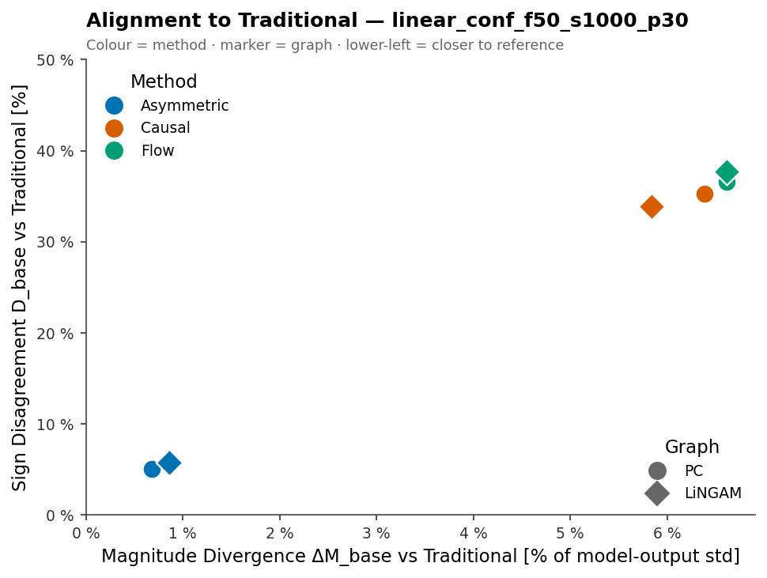
Synthetic: ASV clusters lower-left; CSV & Flow upper-right
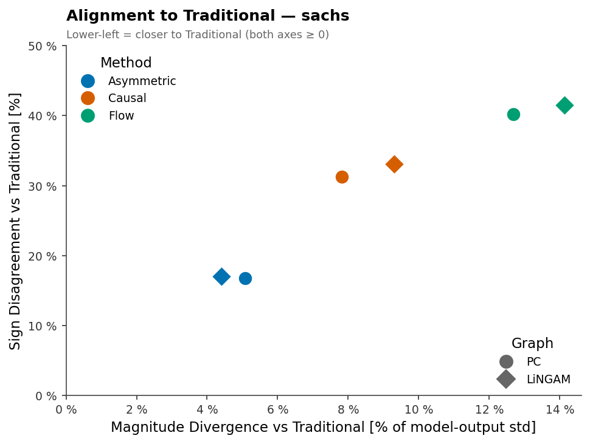
Sachs: same hierarchy — axes spread wider due to compact 10-node network
Baseline Deviation — Synthetic
Method
Graph
Dbase
ΔMbase
ASV
PC
5.08%
0.68%
ASV
LiNGAM
5.76%
0.86%
CSV
PC
35.30%
6.39%
CSV
LiNGAM
33.92%
5.84%
Flow
PC
36.58%
6.62%
Flow
LiNGAM
37.68%
6.61%
Baseline Deviation — Sachs
Method
Graph
Dbase
ΔMbase
ASV
PC
16.80%
5.08%
ASV
LiNGAM
17.00%
4.41%
CSV
PC
31.30%
7.83%
CSV
LiNGAM
33.10%
9.31%
Flow
PC
40.20%
12.68%
Flow
LiNGAM
41.50%
14.17%
Results · Baseline Comparison
Baseline Magnitude Heatmaps (ΔMbase)
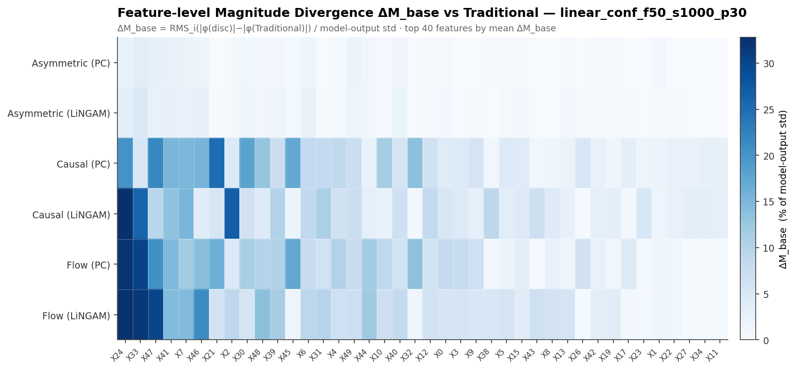
Synthetic: ASV rows pale throughout · CSV/Flow darken on X24, X33, X47
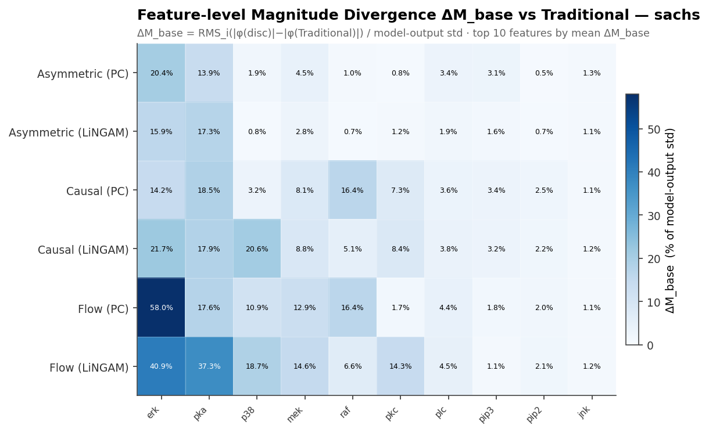
Sachs: even ASV shows elevated erk/pka — compact 10-node network effect
Synthetic (50 nodes): ASV rows nearly invisible — 50! ordering universe means each graph edge constrains a negligible fraction of permutations. CSV and Flow concentrate deviations on dominant features X24, X33, X47.
Sachs (10 nodes): 10! = 3.6M orderings — each edge eliminates a far larger share. Even ASV shows elevated ΔMbase on erk and pka, signalling that the compact network amplifies ordering constraints.
Results · Baseline Comparison
Baseline Sign Heatmaps (Dbase)
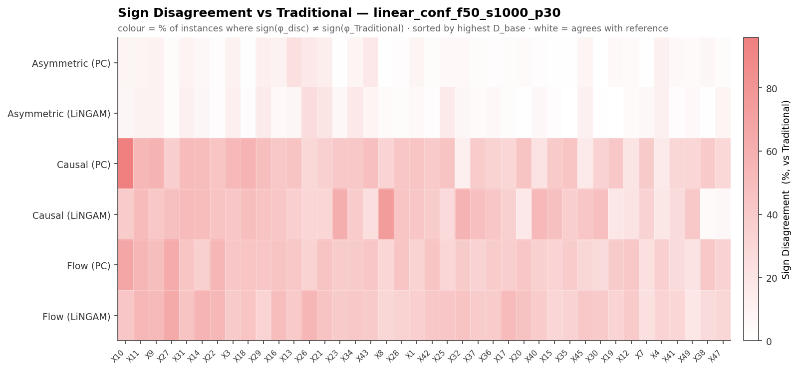
Synthetic: sign flips concentrate on X10, X11 — not X24/X33/X47
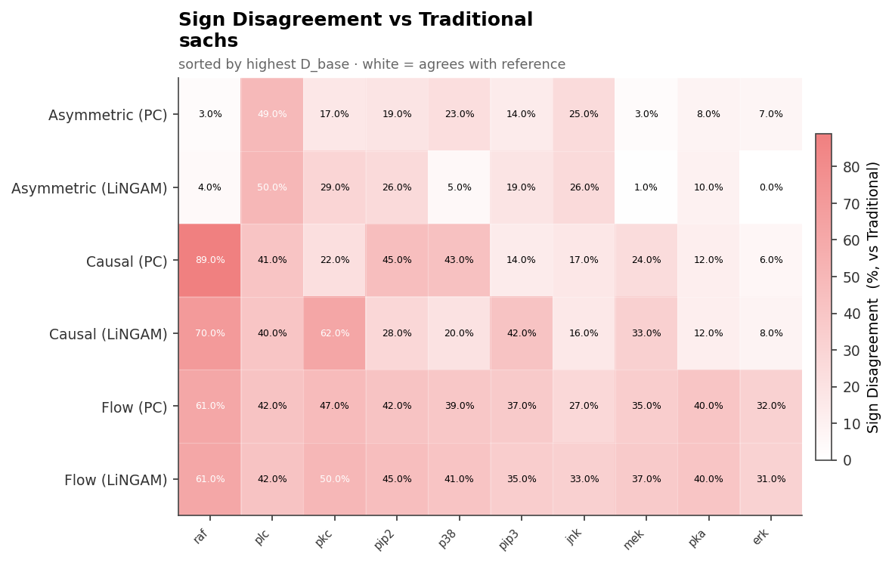
Sachs: sign leaders are raf, plc, pkc — not erk/pka
Non-overlapping feature sets: Sign heatmap flags a completely different population from the magnitude heatmap. X10 (synth) and pkc (Sachs) lead sign disagreement but are invisible in magnitude — their Traditional Shapley values sit near zero.
Why this matters: A sign flip tells the opposite qualitative story to an affected individual. ΔM alone would miss these features entirely. The proportion of features changing sign is broader than the proportion driving magnitude change.
Results · Discovery Sensitivity
Discovery Algorithm Sensitivity — Scatter
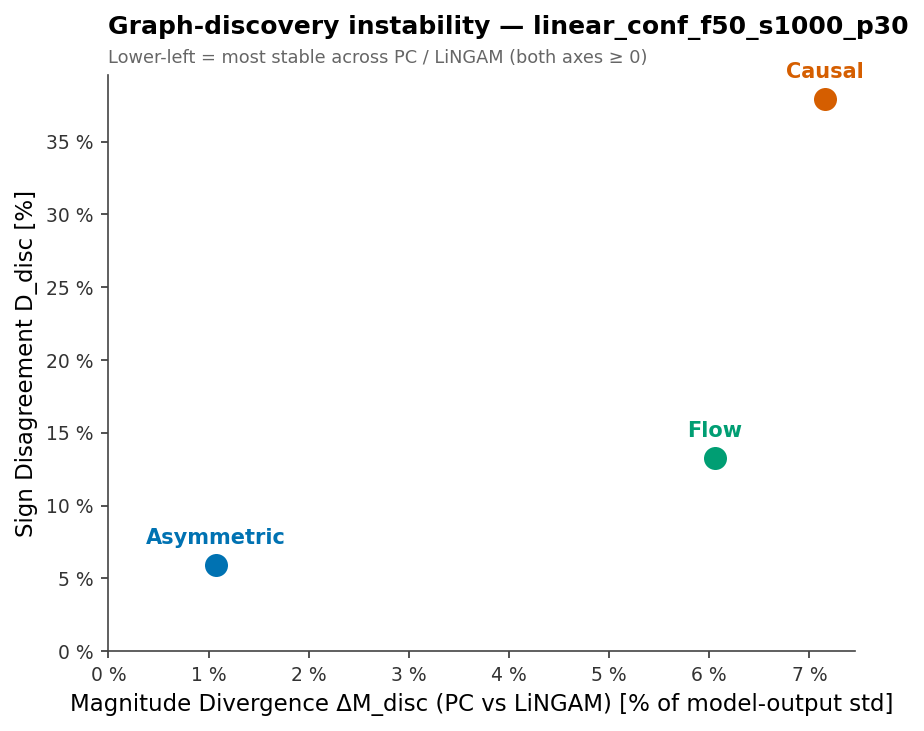
Synthetic: ASV lower-left · CSV upper-right (high sign instability) · Flow centre
ASV — minimal sensitivity (synthetic): ΔMdisc=1.07%, Ddisc=5.93%. Sparse 50-node graph leaves most ordering relationships unconstrained by both PC and LiNGAM.
ASV — Sachs raises concern: ΔMdisc=8.46%, Ddisc=18.6%. Even the safest method is affected when the network is compact. Feature-level metrics identify exactly which nodes are contested.
CSV & Flow — high sensitivity: Flow ΔMdisc=14.92% on Sachs — nearly 2× ASV. CSV Ddisc=31.80% on Sachs — sign of explanation flips on ~1 in 3 features when switching discovery algorithm.
Results · Discovery Sensitivity
Cross-Discovery Magnitude Heatmaps (ΔMdisc)
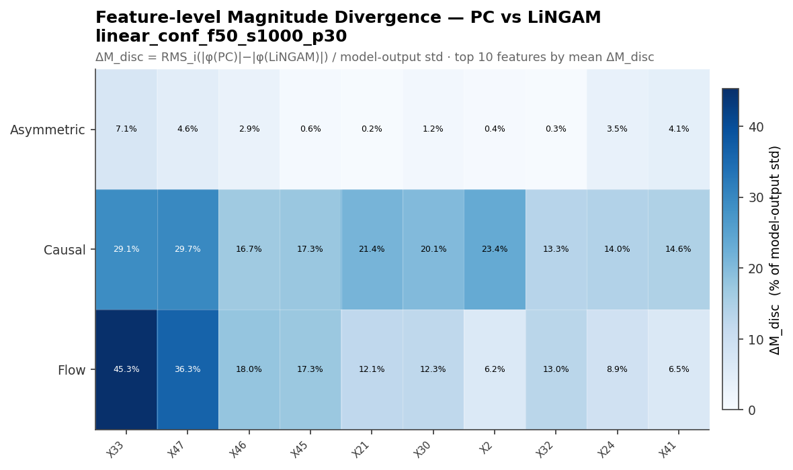
Synthetic: ASV row near-zero · contested nodes = X33, X47
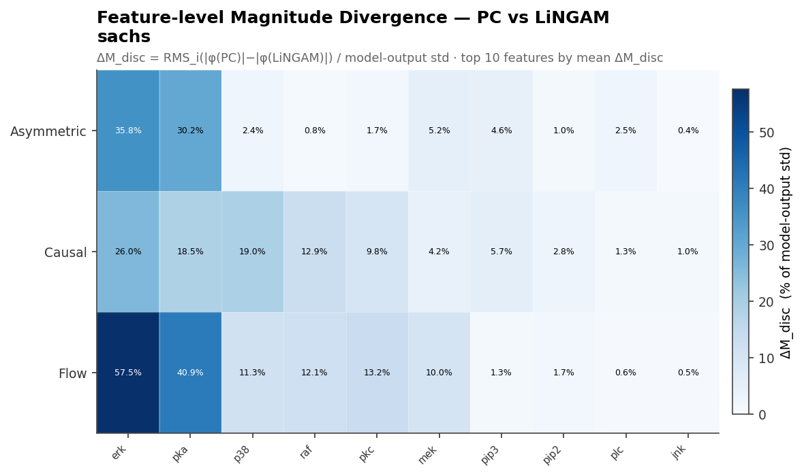
Sachs: erk & pka elevated even under ASV — double-alarm features
Convergence of signals: The features flagged by ΔMdisc are the same ones flagged by ΔMbase. This is not coincidental — both metrics measure attribution change under graph perturbation, just from different starting points. A feature ranking high on both lists has a causal neighbourhood that is influential AND poorly agreed upon by the two algorithms.
Double-alarm on Sachs: erk and pka show elevated ΔMbase AND elevated ΔMdisc — including under ASV. This gives a practitioner a precise, actionable target: validate these specific edges before trusting any structure-aware attribution for these proteins.
Results · Discovery Sensitivity
Cross-Discovery Sign Heatmaps (Ddisc)
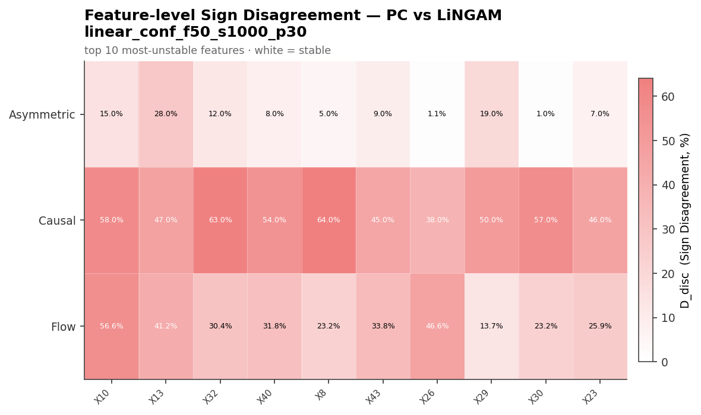
Synthetic: CSV Ddisc up to 64% on X10 — sign leaders ≠ magnitude leaders
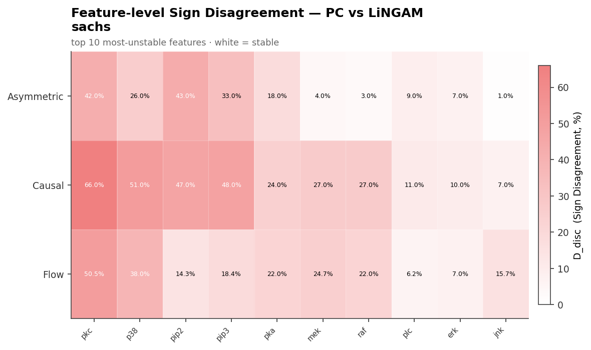
Sachs: sign instability peaks on pkc, p38 — not erk/pka
Complementary populations: Sign heatmap flags X10, X32 (synth) and pkc, p38 (Sachs) as unstable. These are near-zero attribution features invisible in ΔMdisc. Switching discovery algorithm is enough to flip their explanatory direction — which algorithm was used determines the sign of the explanation.
Ddisc diagnostic: Where ΔMdisc flags features whose importance is contested, Ddisc flags features whose direction is fragile. Together they cover two structurally distinct failure classes that neither metric alone can detect.
Results · Oracle Alignment
Oracle Alignment — Scatter
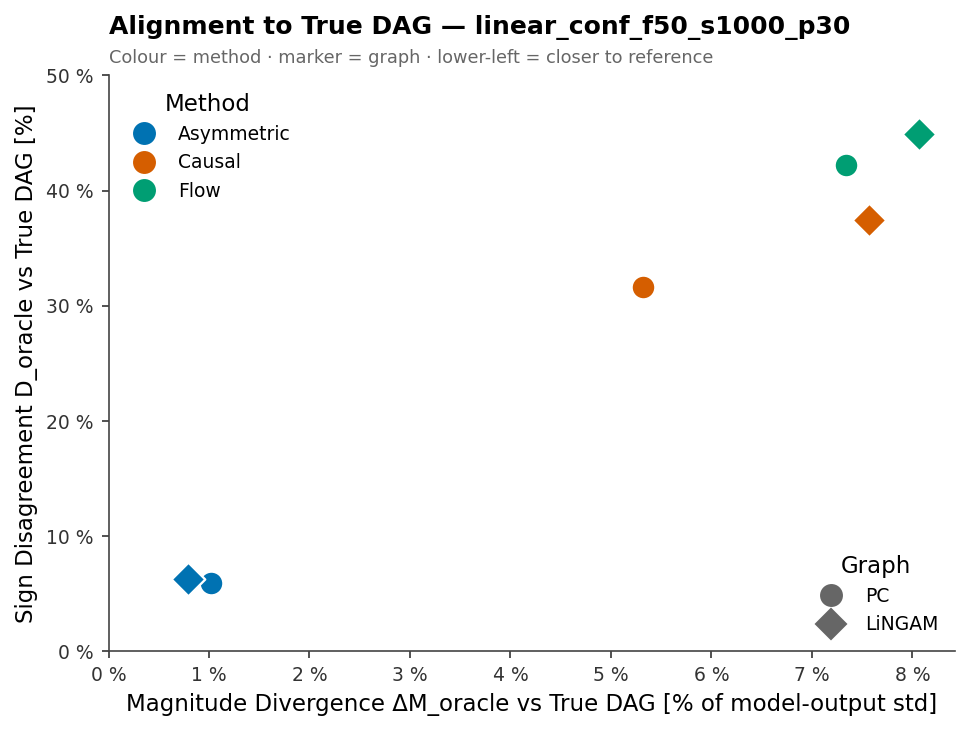
Synthetic: ASV lower-left regardless of graph — near-perfect oracle fidelity
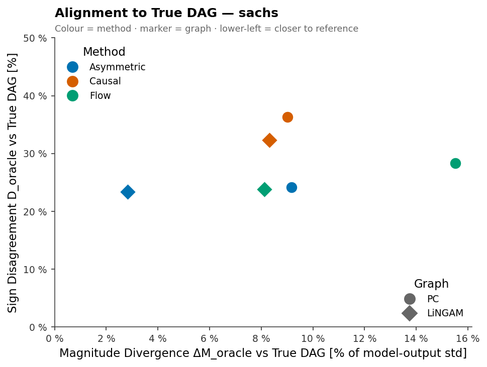
Sachs: PC/LiNGAM separate widely on magnitude; ASV still best on ΔMoracle
Oracle Alignment — Synthetic
Method
Graph
Doracle
ΔMoracle
ASV
PC
5.88%
1.02%
ASV
LiNGAM
6.30%
0.79%
CSV
PC
31.60%
5.32%
CSV
LiNGAM
37.46%
7.57%
Flow
PC
42.26%
7.34%
Flow
LiNGAM
44.91%
8.06%
Oracle Alignment — Sachs
Method
Graph
Doracle
ΔMoracle
ASV
LiNGAM
23.40%
2.84%
ASV
PC
24.26%
9.16%
CSV
LiNGAM
32.30%
8.31%
CSV
PC
36.30%
9.01%
Flow
LiNGAM
23.81%
8.12%
Flow
PC
28.36%
15.52%
Results · Oracle Alignment
Oracle Magnitude Heatmaps (ΔMoracle)
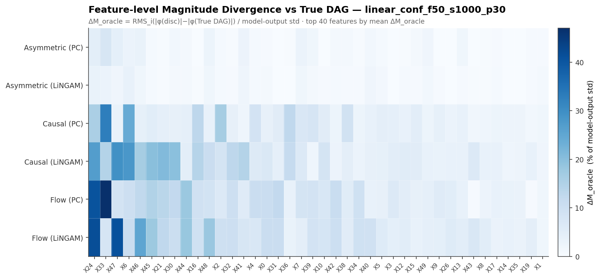
Synthetic: ASV rows pale · CSV/Flow deviations on X24, X33, X47 — same focal nodes as baseline
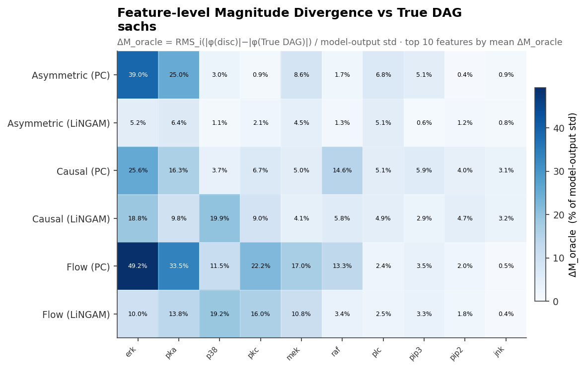
Sachs: Flow+PC on erk = 49.2% σ̂ — largest single oracle deviation in the experiment
Validation of baseline signals: The same features flagged by ΔMbase and ΔMdisc appear here. The oracle confirms the accessible metrics were pointing at genuine structural problems — no ground-truth graph was needed to identify them.
Worst-case — erk under Flow+PC: PC isolates erk as a root node (0 incoming edges). Flow treats it as a high-out-degree source → attribution inflated by 49.2% of σ̂. A practitioner using only PC for Flow would dramatically misrepresent this protein's causal role.
Sachs: sign leaders = plc, pkc, pip2 — only pkc overlaps with magnitude leaders
Sign and magnitude remain non-overlapping: Features driving the highest oracle sign disagreement are again a distinct set from the magnitude leaders — the near-zero pattern is consistent across all three comparisons (_base, _disc, _oracle).
Practical proxy: Since oracle is unavailable in practice, (_base + _disc) together approximate what oracle would reveal. This slide validates that approximation — the features flagged by the accessible metrics were indeed the problematic ones.
Case Studies
The Two-Signal Alert System
Four archetypal failure modes — each identified by a distinct alarm pattern in the accessible metrics
🔶
Alarm 1 — ΔMbase fires, ΔMdisc quiet
Both algorithms commit the same structural error → correlated failure. Cross-discovery cannot detect it. Example: X24
🔷
Alarm 2 — Both ΔMbase AND ΔMdisc fire
Neighbourhood is influential AND contested. Both algorithms wrong, but differently. Examples: X33, X47, pka, erk
🔴
Alarm 3 — Dbase / Ddisc fires, ΔM quiet
Near-zero attribution feature — small graph-induced shift crosses the sign boundary. Invisible to magnitude metrics. Examples: X10, pkc
Running all four metrics together is what makes the framework diagnostic rather than merely descriptive. Each alarm pattern reveals a structurally distinct failure mode that the others cannot detect.
Next slides: detailed walkthrough of each failure mode with DAG and SHAP figures
Case Studies · Archetype 1
Correlated & Contested Failures — X33 (Synthetic)
X33 neighbourhood — Both alarms fire
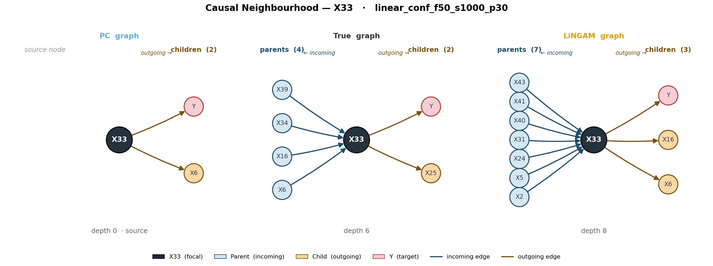
PC and LiNGAM disagree on X33's parent set AND children → ΔMbase and ΔMdisc both elevated
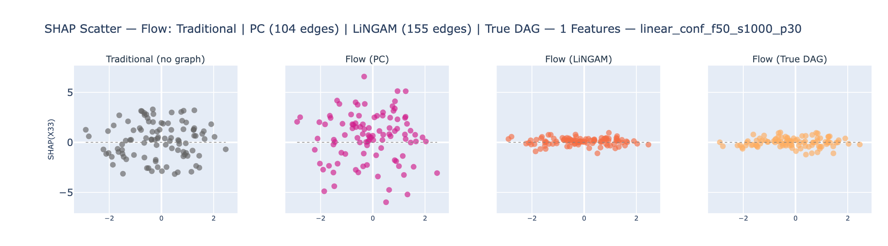
Three distinct clusters for Flow+PC, Flow+LiNGAM, Flow+True — none coincide
🔷
Two-signal pattern: ΔMbase AND ΔMdisc elevated simultaneously → neighbourhood is both influential and contested. Validate the specific flagged edges before using any structure-aware Shapley method for this node.
Case Studies · Archetype 1
Correlated & Contested Failures — pka (Sachs)
pka neighbourhood — Both alarms fire
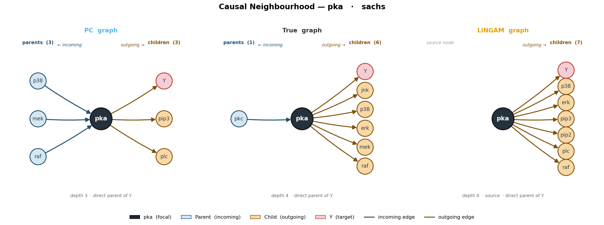
PC reverses pka's outgoing edges (3 in/3 out); LiNGAM keeps it near-root (7 out/0 in)
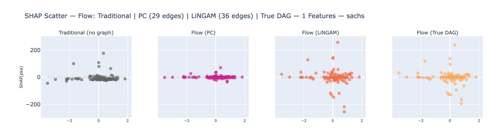
Flow+PC inflated cluster vs Flow+LiNGAM close to oracle — clear PC/LiNGAM axis separation
🔷
Two-signal pattern: Same as X33 — ΔMbase AND ΔMdisc both elevated. The compact Sachs network (10 nodes) amplifies this: each disputed edge constrains a larger share of all possible orderings.
Case Studies · Archetype 2
Directed Edge Inversion — Neighbourhood Graphs
X47 neighbourhood
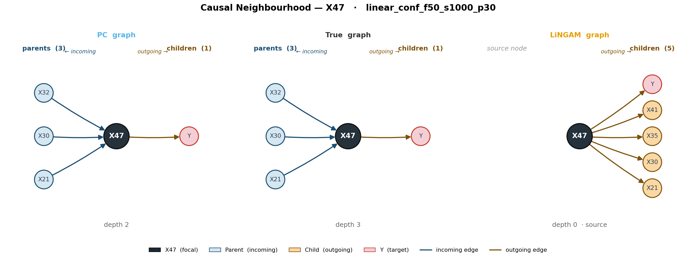
True: 3 in / 1 out · PC: correct · LiNGAM: 0 in / 5 out (apparent root)
X21 neighbourhood
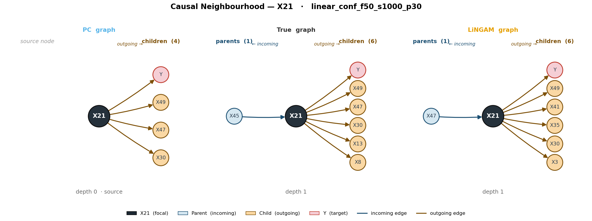
True: X21→X47 · LiNGAM reverses to X47→X21 — credit transfer
Mechanism: LiNGAM reverses edge X21→X47 to X47→X21. Under Flow, outgoing edge X47→X21 routes X47's credit toward X21 → X47 under-attributed, X21 inflated. Under Causal, reversed edge injects X47 into X21's parent set → both contaminated.
Case Studies · Archetype 2
Directed Edge Inversion — SHAP Attribution Shift
SHAP scatter (X47 & X21)
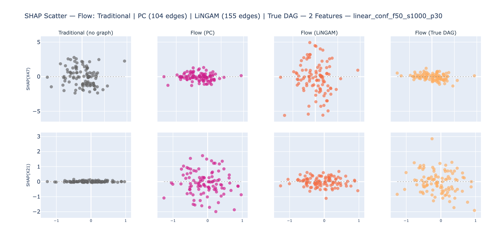
Flow+PC agrees with oracle · Flow+LiNGAM: X47 suppressed, X21 inflated
What the inversion does
LiNGAM makes X47 an apparent root node (0 incoming edges)
Flow then routes X47's credit outward along the inverted edge toward X21
Result: X47 under-attributed, X21 over-attributed — both wrong
🔷
Lesson: Don't prune the X21–X47 edge — it's real. Invest in resolving its correct orientation. Correcting direction (as PC does) restores oracle-consistent attributions without discarding structural information.
Case Studies · Archetype 3
Structural Role Error Resolved by Domain Knowledge
erk (Sachs) — highest intensity alarm in the experiment
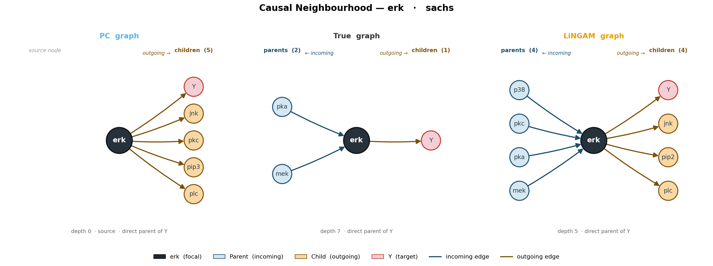
Consensus: erk receives from pka and mek · PC: removes all incoming edges, erk becomes isolated root · LiNGAM: recovers some incoming connections
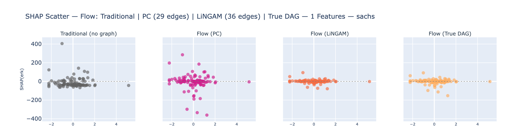
Flow+PC: inflated cluster (source-node overloading) · Flow+LiNGAM: less distorted, closer to oracle · Oracle deviation: 49.2% σ̂ for Flow+PC — largest in the experiment
🔷
ΔMbase fired across ALL three methods · ΔMdisc reached 57.5% σ̂ (Flow) and 35.8% (ASV) — highest ASV disc deviation in either dataset. Both alarms fire simultaneously with maximum intensity.
Domain knowledge resolves: Biology confirms erk is a downstream kinase receiving pka/mek input — not a root source. LiNGAM's partial recovery is closer to reality. Alarms pointed at erk without oracle access; validation confirmed which graph to trust.
Tight near-zero Traditional cluster fans out to broad, sign-mixed Causal+PC distribution
pkc (Sachs) — leads Sachs sign heatmaps; invisible in magnitude
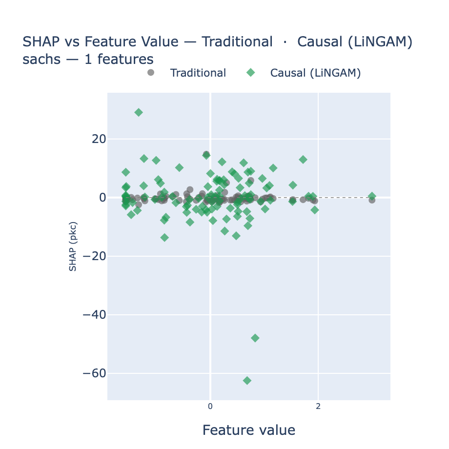
Traditional near zero · Causal+LiNGAM disperses to both sides — small magnitude, high sign flip
🔴
Sign-only alarm: X10 and pkc were not on the radar under Traditional Shapley. The sign heatmap is the only signal that brings them to attention. D fires; ΔM stays quiet. These features acquire meaningful (and potentially inverted) explanatory weight once a graph is introduced.
Conclusion
ASV: The Recommended Default
Sachs discovery scatter — ASV lower-left (most stable) but feature-level metrics still flag erk & pka even under ASV
Why ASV?
Changes only the permutation space — graph errors absorbed, not inherited
Synthetic: ΔMbase <1% σ̂, Dbase <6%, ΔMoracle <1%
Sachs: still best on magnitude — ΔMoracle=2.84% under LiNGAM
No additional computational cost over standard Monte Carlo SHAP
Even ASV needs the diagnostic framework
On Sachs, erk and pka show elevated ΔMdisc even under ASV
Small networks: each discovery edge constrains a larger ordering fraction
The framework identifies exactly which nodes to validate
Key numbers
Metric
ASV (Synth)
ASV (Sachs)
ΔMbase
<1% σ̂
4–5% σ̂
Dbase
<6%
16–17%
ΔMoracle
<1% σ̂
2.84% σ̂
ΔMdisc
1.07% σ̂
8.46% σ̂
Conclusion
CSV & Flow: Only With a Validated Graph
Method Selection Guide
Scenario
Recommended
Unknown graph quality
ASV
ΔMdisc low on all features
ASV or CSV
Ddisc elevated on any feature
Re-validate edges first
Graph fully domain-validated
CSV or Flow
ΔMbase or Dbase high
Check discovery first
CSV & Flow Require Graph Validation
Use only when ΔMdisc and Ddisc are low across all features
Or when domain experts have validated the specific graph structure
CSV: each wrong edge corrupts an attribution via do-calculus directly
Flow: errors cascade along all connected paths simultaneously
Decision Rule
Start with ASV — lowest risk under any graph quality
Run the diagnostic framework first, even with ASV
Upgrade to CSV/Flow only after feature-level validation passes
Practical Recommendations
Practitioner Workflow — Steps 1–3
1
Run two discovery algorithms on the same data (e.g. PC and LiNGAM). Never rely on a single algorithm.
2
Compute baseline comparison (ΔMbase, Dbase) vs Traditional Shapley. Identify features where graph injection causes large magnitude shifts or sign flips — first alarm.
3
Compute cross-discovery comparison (ΔMdisc, Ddisc). Features high on both _base and _disc have a neighbourhood that is influential AND contested — double alarm, highest priority.
What these steps give you
Step 1: Two independent graph estimates — required for cross-discovery metrics
Step 2: Baseline alarm — identifies which features are structurally sensitive
Step 3: Cross-discovery alarm — identifies features that are additionally graph-contested
🔷
Steps 1–3 require no ground-truth graph and no oracle. They only need two discovery algorithm runs and a Traditional Shapley baseline — fully computable in any real-world setting.
Practical Recommendations
Practitioner Workflow — Steps 4–6
4
Validate flagged nodes: consult domain knowledge, literature, or experts to resolve edge orientation or presence for contested neighbourhoods. Do not prune real edges — resolve their direction.
5
Choose Shapley method: use the validated graph. Start with ASV as the default — lowest risk under any graph quality.
6
Upgrade to CSV or Flow only if the cross-discovery metrics are low across all features AND most discovered causal relationships are validated and make domain sense.
Default recommendation
ASV — delivers oracle-level alignment, absorbs graph errors, zero additional computational cost.
Always run the diagnostic framework first, even with ASV.
Reporting
Report ΔMbase and Dbase alongside any structure-aware explanation to make the causal modelling decision transparent and auditable.
Key insight
ΔMbase + Dbase only require a Traditional Shapley run as reference.
ΔMdisc + Ddisc only require two discovery runs on the same data. Both are fully computable in any real-world setting.